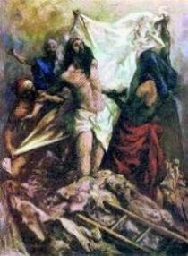
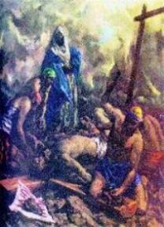
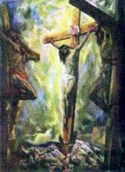

=10th, 11th and 12th Stations=

TENTH STATION
"JESUS IS STRIPPED OF HIS GARMENTS"
Oh JESUS, by the pain YOU suffered in having YOUR clothing torn from YOUR bleeding body, please strip us of all conceit and pride, and instruct us in the ways of humility, purity of intention and simplicity of heart.
Arriving at the Golgotha, the soldiers pushed HIM once again and HE fell in the ground; they removed HIS clothes tearing the dresses intimates in four parts, one part for each one. Following, they made luck of the tunic that was entire, was of only one piece and to see whom would stay with her.
 We adore YOU, Oh CHRIST, and we bless YOU! (To kneel)
We adore YOU, Oh CHRIST, and we bless YOU! (To kneel)
Because by YOUR Holy Cross YOU have redeemed the world! (To lift)
 In the Calvary, the soldiers left HIM entirely nude before
nailing in the Cross. Starting from the century IV, by respect at the LORD, the painters
and sculptors reproduce the image of Crucified JESUS with HIS waist involved per
a white fabric.
In the Calvary, the soldiers left HIM entirely nude before
nailing in the Cross. Starting from the century IV, by respect at the LORD, the painters
and sculptors reproduce the image of Crucified JESUS with HIS waist involved per
a white fabric.
The wickedness and the desire to explore the others becomes the insatiable people. JESUS had only the clothes of the Body and they have plucked OF HIM.
 The violence of Calvary continues in the cities and in the fields
of the world. And the victims are every place: people hunger, abandoned children, and
assaults and murders that going staining of blood the Countries soil.
The violence of Calvary continues in the cities and in the fields
of the world. And the victims are every place: people hunger, abandoned children, and
assaults and murders that going staining of blood the Countries soil.
Happy are those follows the road of the LORD and it observes HIS teachings. It will be blessed and protected by the Divine grace and will earn the eternal life.
SONG:
Of YOURS bloody vestment / wounded and stepped / I see YOU my JESUS / I see YOU my JESUS.
By the painful Virgin / Your MOTHER so pious / Forgives me oh my JESUS / forgives me oh my JESUS.


ELEVENTH STATION
"JESUS IS NAILED TO THE CROSS"
As YOU are nailed to the Cross, oh JESUS, fasten our hearts there also, to be united to YOU until death.
Simon left the Cross close to JESUS while the Roman soldiers crucified the two thieves. Then they came until HIM. They have laid HIM above log and with violence have nailed the right hand doing to penetrate the iron nail in HIS meat crossing the pulse and fixing in the Cross. By the abrupt penetration of the iron nail the blood gushed intensely of the veins that have gone dilacerated. In the same way, with force and brutality, they nailed the left hand. And also both feet, one above the other, the left foot above the right crossed by an only nail. Now HE was nailed definitively in the Cross.
 We adore YOU, Oh CHRIST, and we bless YOU! (To kneel)
We adore YOU, Oh CHRIST, and we bless YOU! (To kneel)
Because by YOUR Holy Cross YOU have redeemed the world! (To lift)
 JESUS was nailed in the Cross and elevated of the earth and at the
HIS side have been crucified two malefactors, Dimes and German, one in the right side and
another in the left side.
JESUS was nailed in the Cross and elevated of the earth and at the
HIS side have been crucified two malefactors, Dimes and German, one in the right side and
another in the left side.
One of the malefactors asked to JESUS: "LORD, remembers me when YOU come in YOUR Kingdom". And JESUS answered him: "I say to you, today you will be with ME in Paradise." (Luke 23; 43)
 JESUS knew that the death was not the end. HE knew that
was just a passage for the Eternal Life in the CREATOR FATHER'S house. Every person
that is sorry of its lacks and goes back itself to GOD, same in the last moment of your life,
can receive the Divine pardon and to be welcomed in the Heaven.
JESUS knew that the death was not the end. HE knew that
was just a passage for the Eternal Life in the CREATOR FATHER'S house. Every person
that is sorry of its lacks and goes back itself to GOD, same in the last moment of your life,
can receive the Divine pardon and to be welcomed in the Heaven.
LORD, save me of the evil's paths. Give us YOUR mercy and guide our steps for the Eternity.
SONG:
It went for me in to nailed Cross, / Insulted and blasphemed, / with blindness and with furor. / With blindness and with furor.
By the painful Virgin / Your MOTHER so pious / Forgives me oh my JESUS / forgives me oh my JESUS.


TWELFTH STATION
"JESUS DIES ON THE CROSS"
Your breathing was breathless... With difficulty HE got to support the feet in the iron nail that arrested them, to elevate the Body and to breathe a little. The REDEEMER suffered because of our many sins... Heavy Clouds involved the firmament and the earth covered of darkness. Strong tremors have cleft the rocks, opening many graves resuscitating bodies of just, and without any human intervention the veil of the Jewish Temple became torn from top to bottom, indicating that something very extraordinary has just happened. In that moment, the LORD delivered HIS SPIRIT to the ETERNAL FATHER, dying in the Cross.
Oh JESUS, we embrace with much devotion the Holy Cross in which YOU loved us until death. We thank YOU for YOUR sacrifice, and we desire to love YOU as much as YOU love us.
 We adore YOU, Oh CHRIST, and we bless YOU! (To kneel)
We adore YOU, Oh CHRIST, and we bless YOU! (To kneel)
Because by YOUR Holy Cross YOU have redeemed the world! (To lift)
 Next to the cross of JESUS were his Mother and his Mother's sister,
Mary the wife of Clopas, and Mary of Magdala. When JESUS saw HIS Mother and the Disciple
that HE loved, HE said to HIS Mother:
Next to the cross of JESUS were his Mother and his Mother's sister,
Mary the wife of Clopas, and Mary of Magdala. When JESUS saw HIS Mother and the Disciple
that HE loved, HE said to HIS Mother:
- "Woman, behold, your son."(John 19; 26)
 And following HE said to the Disciple: "Behold, your Mother." (John 19; 27)
And following HE said to the Disciple: "Behold, your Mother." (John 19; 27)
This was the Redeemer's last Will, the final chapter of the Divine Testament. For us, without a doubt, it was a great surprise, the dearest present and the best of all. On that place, the Disciple "that HE loved" was representing all the people, the whole humanity, inclusive each one of us. Full of Mercy, JESUS gave us the OWN MOTHER to be also our Spiritual MOTHER.
 When JESUS seeing that everything was finished, HE
screamed very high:
When JESUS seeing that everything was finished, HE
screamed very high:
"FATHER, into YOUR Hands I commend MY Spirit".(Luke 23; 46)
 And bowing the Head, HE died.
And bowing the Head, HE died.
(The people should kneel in silence and to do an interior prayer)
The Bible doesn't say the Disciple's name that was beside OUR LADY. It is a way to show that Disciple it is the image of all humanity. So, like JESUS said to him, the LORD also is saying to each one of us: Son, this is your Mother! Starting from that moment, OUR LADY became the Mother of the Church, the Mother of all us.
 Hail MARY, full of grace, the LORD is with Thee, Blessed art
THOU among women and blessed is the fruit of THY womb, JESUS. Holy MARY, MOTHER
OF GOD, pray for us sinners, now and at the hour of our death. Amen.
Hail MARY, full of grace, the LORD is with Thee, Blessed art
THOU among women and blessed is the fruit of THY womb, JESUS. Holy MARY, MOTHER
OF GOD, pray for us sinners, now and at the hour of our death. Amen.
SONG:
My JESUS per us YOU have died! / Per us all YOU have suffered, / Oh! So big it is YOUR pain! / Oh! So big it is YOUR pain!
By the painful Virgin / Your MOTHER so pious / Forgives me oh my JESUS / forgives me oh my JESUS.